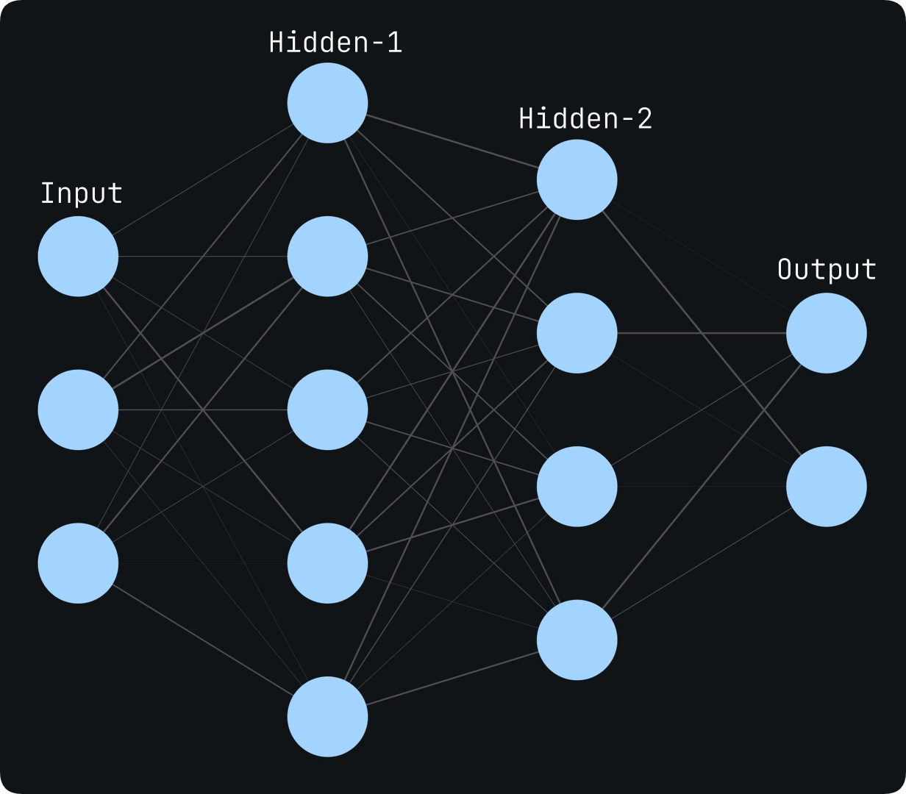
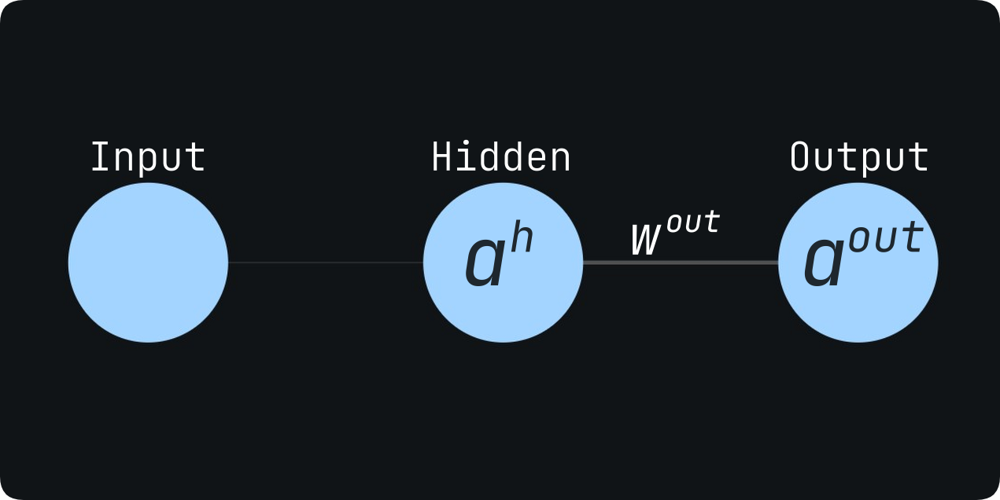
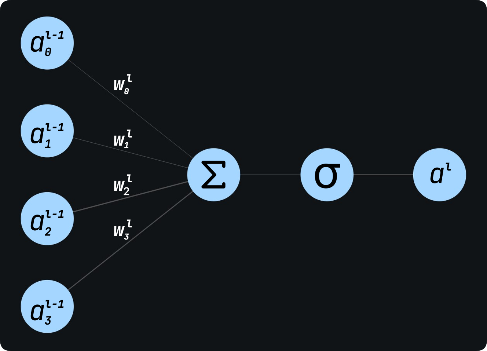
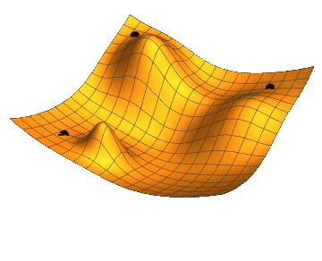

<!DOCTYPE HTML>
<html>
	<head>
		<!-- Google tag (gtag.js) -->
		<script async src="https://www.googletagmanager.com/gtag/js?id=UA-231507627-1"></script>
		<script>
		window.dataLayer = window.dataLayer || [];
		function gtag(){dataLayer.push(arguments);}
		gtag('js', new Date());

		gtag('config', 'UA-231507627-1');
		</script>

		<meta charset="utf-8">
		<meta http-equiv="X-UA-Compatible" content="IE=edge">
		<title>Understanding Neural Networks</title>
		<link rel="icon" type="image/favicon.ico" href="images/web_icon.ico" />
		<meta name="viewport" content="width=device-width, initial-scale=1">
		<meta name="description" content="#" />
		<meta name="keywords" content="#" />
		<meta name="author" content="#" />

		<link href="https://fonts.googleapis.com/css?family=Oxygen:300,400" rel="stylesheet">
		<link href="https://fonts.googleapis.com/css?family=Source+Sans+Pro:400,600,700" rel="stylesheet">
		
		<!-- Animate.css -->
		<link rel="stylesheet" href="css/animate.css">
		<!-- Icomoon Icon Fonts-->
		<link rel="stylesheet" href="css/icomoon.css">
		<!-- Bootstrap  -->
		<link rel="stylesheet" href="css/bootstrap.css">

		<!-- Magnific Popup -->
		<link rel="stylesheet" href="css/magnific-popup.css">

		<!-- Flexslider  -->
		<link rel="stylesheet" href="css/flexslider.css">

		<!-- Theme style  -->
		<link rel="stylesheet" href="css/style.css">

		<!-- Modernizr JS -->
		<script src="js/modernizr-2.6.2.min.js"></script>
      
		<!-- MathJax -->
      <script src="https://polyfill.io/v3/polyfill.min.js?features=es6"></script>
      <script id="MathJax-script" async src="https://cdn.jsdelivr.net/npm/mathjax@3/es5/tex-mml-chtml.js"></script>
		<!-- FOR IE9 below -->
		<!--[if lt IE 9]>
		<script src="js/respond.min.js"></script>
		<![endif]-->
	</head>
</html>

<body>
	<div id="page">
		<nav class="fh5co-nav" role="navigation">
			<div class="container-wrap">
				<div class="top-menu">
					<div class="row">
						<div class="col-xs-2">
							<div class="fh5co-logo"><a href="/">LookingIsNotEnough</a></div>
						</div>
						<div class="col-xs-10 text-right menu-1">
							<ul>
								<!-- <li class="has-dropdown">
									<a href="/">Blog</a>
									<ul class="dropdown">
										<li><a href="UnderstandingNeuralNetwork">Understanding Neural Networks</a></li>
										<li><a href="ConnectingTheDots">Connecting the Dots</a></li>
									</ul>
								</li> -->
								<li><a href="/">Blog</a></li>
								<li><a href="about">About</a></li>
								<li><a><i class="theme-icon" id="dark-mode-toggle"></i></a></li>
							</ul>
						</div>
					</div>
					
				</div>
			</div>
		</nav>
	<div class="container-wrap">
		<aside id="fh5co-hero">
			<div class="flexslider">
				<ul class="slides">
			   	<li style=" 
                  	background-image: url(images/deepmind-Krw-2KP7bOE-unsplash.jpg);
                  	max-height      : 5%;
                  	border-radius   : 70px;
                  	padding         : 10%;
						">
			   		<div class="overlay-gradient"></div>
			   		<div class="container-fluids">
			   			<div class="row">
				   			<div class="col-md-6 col-md-offset-0 slider-text slider-text-bg">
				   				<div class="slider-text-inner text-center">
				   					<h1 style="color: black;">Understanding Neural Networks</h1>
				   				</div>
				   			</div>
				   		</div>
			   		</div>
			   	</li>		   	
            </ul>
         </div>
		</aside>
		<div id="fh5co-blog" class="blog-text-style">
			<article class="blog-text">
				<p>
					Machine learning is everywhere these days, from how google assistant answers you, to how youtube recommends a video 
					it thinks you'd like to watch. From note-taking software to medical diagnosis. Twitter and Instagram use it to choose what tweets and posts 
					to show you first. As I said, everywhere. I don't know why but it always intimidated me. How can a machine learn? 
					Like "learn" learn and not just memorize everything bit by bit as a hard drive does, or follow the hard-coded instructions like a CPU does.
					<br>But you know what? When I finally exposed myself to it, I found the idea of a machine, learning, really simplistic in its essence.
				</p>
				<p>
					<em>"Machine Learning"</em> is an umbrella term, a tree with sprawling branches of different algorithms, and neural networks are one of them, 
					a very important one I might add. Designed to mimic the way the human brain processes information. It does this by simulating the behavior of 
					the neurons, the building blocks of the brain.  
				</p>
				<p>Let's dive deeper into the world of neural networks. </p>
				<h2 class="header-style-2" style="text-align: center;" id="what-makes-a-neural-network-tick">What makes a Neural Network tick?</h2>
				<figure>
					<p align="center">
						
					</p>
				</figure>
				<p>Neural networks are function approximators. Just like a mathematical function, they take in an input, do some calculations on it, and output the result.<br>  
					On some level, our brain does the same thing. It takes pressure waves as input and spits out the perception of sound. Electromagnetic radiation goes in, 
					an image comes out. So in a sense, the brain is a very competent and precise function approximator too!
					<br>This is where the term <em>"Neural Network"</em> comes in. I'll just leave it at that before I romanticize this notion even more.  </p>
				<p>A more technical definition is, a basic neural network is composed of multiple layers of interconnected nodes called "neurons", 
					where each layer is fully connected to the next, i.e. each neuron in one layer is connected with every neuron in the next layer. 
					So neurons in a layer receive inputs from neurons in the previous layer, perform a simple calculation on that input and passes 
					the result (their output) to the next layer. By flowing the input data through many layers with multiple neurons, 
					a neural network can learn to recognize complex patterns and make predictions or decisions based on that data.</p>
				<figure>	
					
				</figure>						
				
				<p>You can see in the figure, there's an input layer with some neurons connected to the neurons in the first hidden layer (they're called hidden layers because 
					their internal structure is not visible when we examine the neural network), that first hidden layer itself is connected to the neurons in the second hidden layer. 
					And finally, the second hidden layer is connected to the output layer. The network is <em>fully-connected</em>.</p>
				<p>The lines are the connections and the thickness of the line shows the weight or importance of the connection. </p>
				<blockquote class="blockquote-style">
				<p>These visualizations of neural networks are there just as a device, to be able to understand and think about them. In actual code, all these relationships, 
					the connections (weights), and neurons are just numerical values, represented as a Tensor (n-dimensional array).  </p>
				</blockquote>
				<p>Except for the input layer, each layer also has an activation function (not visualized in the figure), which takes in the relevant variables 
					(like weights and the activation of the neurons in the previous layer), and causes the neurons to be more or less active. The more active a neuron is, 
					the bigger its output to the next layer, and that helps the network make some decisions rather than others from the output space. </p>
				<h3 class="header-style-3" id="what-does-the-activation-of-a-neuron-mean">What does the activation of a neuron mean?</h3>
				<p>Let's take a simple example, let's say we have a neural network that is trained to classify whether an image of the face of a coin is showing heads or tails. 
					Now let's input an image showing heads. When the image data reaches the hidden layers, the neurons that learned the patterns of the image showing heads get stimulated by 
					the data and light up (more active), and neurons that learned the patterns of the tails quiet down (less active). These activations flow through all the hidden layers. 
					Once it reaches the output layer (which has two neurons, one for heads and one for tails), the neuron that outputs heads is significantly more active than the one that outputs tails. 
					Finally, the network compares both output neurons for max activation value and outputs heads. This is how the activation of neurons helps a neural network make predictions.</p>
				<blockquote class="blockquote-style">
				<p>To be more precise, the learned values of weights (connections) affect the activation function, which outputs a value, that is the activation of the neuron.  </p>
				</blockquote>
				<p>I know that was a trivial example, but to get an intuitive sense of what happens inside the network when input is given, and what the activation of a neuron means, I think it did the job just fine.</p>
				<p>I talked a lot about <em>the activation of neurons</em>, but now let's see how to calculate it mathematically.  </p>
				<blockquote class="blockquote-style">
				<p>If you find something a little confusing below, don't worry, I'm right there with you. I too was confused. Just skim past it and come back later. I bet you won't find it as confusing the second time.</p>
				</blockquote>
				<p>Here we've a simple network with an input layer, a hidden layer, and an output layer with one neuron each.
					<figure>
						</p>
					</figure>
					<p>let's denote,</p>
				<ul>
					<li><em>Weights</em> by '<strong>\(w\)</strong>'.  </li>
					<li><em>Bias</em> by '<strong>\(b\)</strong>' (this is another variable<br>a neuron has that helps it learn).  </li>
					<li><em>Activation of the neuron</em> with '<strong>\(a\)</strong>'.  </li>
					<li>And the <em>activation function</em> by '<strong>\(\sigma\)</strong>' (greek letter sigma).</li>
				</ul>
				<p>Activation of the output neuron ( <strong>\(a^{out}\)</strong>, subscript denotes the layer, \(out\) for output layer and \(h\) for hidden layer. ) -
				<strong>$$a^{out}=\sigma\left(w^{out}a^{h}+b^{out}\right)$$</strong></p>
				<p>We can further generalize the expression to calculate the activations of neurons of the whole layer ( <strong>\(l\)</strong>, I'm using the vector notation to avoid confusing indices as subscripts. ).</p>
				<ul>
				<li>Activation of the neurons in the layer ( <strong>\(a^l\)</strong> ) -</li>
				</ul>
				<p><strong>$$a^{\ l}\ =\ \sigma\left(\sum_{ }^{ }w^{\ l}\ a^{\ l-1}+b^{\ l}\right)$$</strong></p>
				<figure>
					
				</figure>
				
				<p>As you can see, the activation of a neuron in layer (\(l\)) is the weighted sum of all activations in the previous layer (\(l-1\)) plus the bias term, 
					passed through an activation function that normalizes it, i.e. squeeze it down to a range between 0 and 1 or -1 and 1, depending upon what activation function we use. 
					This is done so that the output doesn't get out of control due to all the summed-up multiplications.</p>
				<p>The activation of a neuron is a juggling act between the activations of neurons in the previous layer, the weights connecting them, and the bias of the neuron.<br>
					This also means that the activation of a neuron is dependent upon the activations of all neurons in the previous layer. The output is dependent upon the activation of 
					the last hidden layer, and its activation is dependent upon the second last layer, and so on.  </p>
				<p>While training the network, neurons that are active together often, form a microcosm of connections (the value of the weights of the connections between them increases). 
					The saying, "Neurons that fire together, wire together.", for the biological neurons applies here too. </p>
				<p>And <em>Learning</em> is remembering the patterns of those connections relative to the input data while training so that when the network encounters some input that resembles 
					the learned patterns, it can make predictions based on the neuronal activations.</p>
				<blockquote class="blockquote-style">
				<p>This is how you and I learn too. As kids, we saw some color and heard someone say "Red". To learn this relationship 
					the brain made necessary changes to its neural circuit's activation patterns for when it next time encounters the input "red". 
					Now when we see or even think about something related to color red, those same neurons light up at that exact pattern.
					<br>This is how you're learning right now, but I digress.</p>
				</blockquote>
				<p>So we input some data into a neural network, which stimulates relevant neurons, they become active and output the prediction. If the network is trained on a dataset similar to or 
					related to the input, that prediction is meaningful to us.</p>
				<h3 class="header-style-3">But what does it mean to train a neural network?</h3>
				<p>Well, we train a neural network to find the particular values of the variables (weights and biases) so that its predictions result in something of significance to us.  </p>
				<h3 class="header-style-3">And how do we do that?</h3>
				<p>In our dataset, we've got two things, the data (eg. images of cats) and the labels (color of the cats). The labels are the desired output we want from the network, 
					they're the ground truth. When we input a piece of data and label from the dataset, the network outputs a prediction, a function then compares the label to the prediction, 
					and tells the network how to change its weights and biases so that the prediction gets closer to the actual label. We call it the Cost or Loss function. 
					The closer the output of the loss function is to zero, the closer the predictions are to the labels.<br>Let's explore the training of a neural network.</p>
				<h2 class="header-style-2" id="-gradient-descent">Gradient Descent</h2>
				<figure>
					
				</figure>
				
				<p>Think of the loss function as a mountain range, and you as a hiker traveling through it. You want to reach the lowest point of a valley which also is the lowest point in 
					the mountain range, so you follow the steepest downhill path, the path that will take you to that point fastest.<br>In the world of neural networks, this is called, <em>Gradient Descent</em>.  </p>
				<p>While training, the network tries to find the steepest downhill path on the valley of the loss function. In its pursuit, the network has to find the weights, 
					and biases that will take the predictions closer to the labels, because then the output of the loss function will be close to zero. The bottom of the valley is reached. 
					The byproduct of this process is that the network's predictions get better and better as they get closer to the labels.  </p>
				<p>This whole job is done by the optimizer, which uses the gradient descent method we just talked about. And this is what optimization of a neural network means, 
					finding the best weights and biases relative to the dataset to improve the predictions.</p>
				<p>There're two algorithms that help a neural network optimize itself, forward and backward propagation.</p>
				<h2 class="header-style-2" id="-forward-propagation">Forward-Propagation</h2>
				<p>In the forward propagation step, the input data is passed through the network, layer by layer, and the predicted output is produced. This is done by calculating the 
					activation of the first hidden layer, where the activation of the input layer is the data itself. This process is repeated for each subsequent layer, 
					passing the activations forward in the network until the final output is produced.<br>Basically, it calculates the activations of the neurons in a layer and passes them to the next layer.</p>
				<h2 class="header-style-2" id="-back-propagation">Back-Propagation</h2>
				<p>Here lies the meat and potatoes of the training of a neural network. In the backward propagation step, the error between the predicted output and the true label is 
					calculated using the loss function (the error is the output of the loss function), and this error is then used to update the weights of the connections and biases of 
					the neurons in the network in a way that reduces the error, i.e. reaching the lowest point of the loss function. This is done through the calculation of the gradient of 
					the loss function, which indicates the direction in which the hiker must go to reach the lowest point in the valley, or in the network's case, 
					the direction in which the weights and biases should be adjusted to minimize the error.  </p>
				<p>The gradient of the loss function is calculated using the multivariable calculus chain rule, which is a can of worms I'm not going to open here.  </p>
				<p>All you need to know is this, the gradient of any function relative to a variable tells us how that function changes (increases or decreases in value) 
					if we nudge that particular variable a little bit to the negative or positive side.<br>
					So when we calculate the gradient of the loss function relative to all the variables (weights and biases) in the network, we are trying to find whether to subtract or 
					add some value to those variables so that the output of the loss function (error) decreases, going towards the lowest point in the valley of the loss function. That's all it does.</p>
				<blockquote class="blockquote-style">
					<p>For the aficionados out there, here are the necessary equations used in the back-propagation algorithm to calculate the gradient of the loss function -</p>
					<ul>
					<li>Error delta (\(\delta\)) of loss function relative to the last layer (\(L\)),</li>
					</ul>
					<p>   <strong>$$\delta^{L} = \bigtriangledown_a C\odot\sigma'(z^L)$$</strong>  </p>
					<ul>
					<li>Error delta (\(\delta\)) of loss function relative to other layers (\(l\)),</li>
					</ul>
					<p>   <strong>$$\delta^{l} = \Big(\ (\ w^{l+1}\ )^T \delta^{l+1}\ \Big)\odot\sigma'(z^l)$$</strong>  </p>
					<ul>
					<li>Partial derivative of the loss function (\(\partial C\)) relative to the bias of the neuron in the index, \(j\), of layer, \(l\) (\(\partial b^l_j\)),</li>
					</ul>
					<p>   <strong>$$\frac{\partial C}{\partial b^l_j} = \delta^{l}_j $$</strong></p>
					<ul>
					<li>Partial derivative of the loss function (\(\partial C)\) relative to the weight of the neuron in the index, \(jk\), of layer, \(l\) (\(\partial w^l_{jk}\)),</li>
					</ul>
					<p>   <strong>$$\frac{\partial C}{\partial w^l_{jk}} = a^{l-1}_k\ \delta^{l}_j $$</strong></p>
					<p>I know it's unfair to throw these cryptic symbols on you without explaining or deriving them, but these equations are the beating heart of any neural network, 
						and this blog will feel incomplete to me if I don't even mention them.<br>
						It's like when you see a language written that you don't speak, all the symbols seem gibberish, and that's ok. You can always learn it if it captures your attention enough.</p>
					<p>If you really want a deeper sense of the mathematics of neural networks, I highly recommend going through the book, <a href="http://neuralnetworksanddeeplearning.com/">"Neural Networks and Deep Learning"</a> 
						by Michael Nielsen, and the YouTube series, <a href="https://youtube.com/playlist?list=PLZHQObOWTQDNU6R1_67000Dx_ZCJB-3pi">"Neural Networks"</a> by Grant Sanderson (3Blue1Brown). 
						I also have a GitHub repository, <a href="https://github.com/ShawakSaraf/Neural-Network-from-Scratch">"Neural Networks from Scratch"</a>, 
						where I've built a neural network in python without using modern ML frameworks like Tensorflow or PyTorch. So if you fancy playing with code, have fun.</p>

				</blockquote>
				<p>After devouring the dataset while training and learning the patterns in it, the neural network is in its full glory, ready to accomplish feats 
					that would've been impossible to program for traditionally with logic alone.<br>
					That is what makes them so special, you're not explicitly defining every pixel of an image or every word of a sentence, it learns them.</p>
				<h2 class="header-style-2" style="text-align: center;" id="coda">Coda</h2>
				<p>Theoretically, these basic neural networks are capable of approximating any function given enough neurons, but due to computational implications, as a problem gets more and more complex, we've to come up with smart and efficient architectures to solve it.</p>
				<p>To me, It's beautiful how a neural network can perform complex tasks such as image recognition, natural language processing, and generative art.<br>But at the heart of it are just these elegant algorithms, beating.  </p>
				<p>All the variables are like ants.<br>
					On their own, they're worth nothing.<br>
					But when they come together, the magic happens.</p>
				<p><strong>And that is what makes a Neural Network tick.</strong>  </p>
				<p>I hope you had a great time reading.<br>And most importantly, I hope I was able to pull you into the fascinating world of Neural Networks.  </p>
			</article>
		</div>
	</div><!-- END container-wrap -->

	<div class="container-wrap">
		<footer id="fh5co-footer" role="contentinfo">

			<div class="row copyright">
				<div class="col-md-12 text-center">
					<ul class="fh5co-social-icons">
						<li><a href="https://twitter.com/ShawakSaraf"><i class="icon-twitter2"></i></a></li>
						<li><a href="https://www.instagram.com/shawaksaraf/"><i class="icon-instagram"></i></a></li>
						<li><a href="https://www.github.com/shawaksaraf/"><i class="icon-github"></i></a></li>
					</ul>
				</div>
			</div>
		</footer>
	</div><!-- END container-wrap -->
</div>

	<div class="gototop js-top">
		<a href="#" class="js-gotop"><i class="icon-arrow-up2"></i></a>
	</div>
	
	<!-- jQuery -->
	<script src="js/jquery.min.js"></script>
	<!-- jQuery Easing -->
	<script src="js/jquery.easing.1.3.js"></script>
	<!-- Bootstrap -->
	<script src="js/bootstrap.min.js"></script>
	<!-- Waypoints -->
	<script src="js/jquery.waypoints.min.js"></script>
	<!-- Flexslider -->
	<script src="js/jquery.flexslider-min.js"></script>
	<!-- Magnific Popup -->
	<script src="js/jquery.magnific-popup.min.js"></script>
	<script src="js/magnific-popup-options.js"></script>
	<!-- Counters -->
	<script src="js/jquery.countTo.js"></script>
	<!-- Main -->
	<script src="js/main.js"></script>
	<!-- Dark Mode -->
	<script src="js/darkmode.js"></script>

</body>

